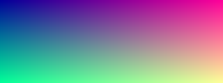
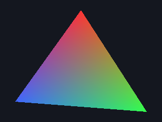
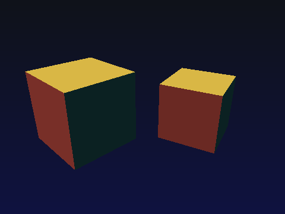

29 Project: a software renderer
Draw triangles yourself: rasterisation, depth buffer, shading, images.
Every 3D game, CAD program and film renderer turns triangles into pixels. GPUs do it in hardware, billions of times per second, but the algorithm is simple enough to write yourself in about 150 lines. Writing it shows exactly what a GPU and a graphics API do. In this project you build a software rasteriser: images, triangles, 3D projection, a depth buffer and lighting. Every image below was produced by the code above it.
Step 1: an image is an array of pixels
An image is a 2D grid of colours, stored row-major in one vector (chapter 7). The simplest file format is PPM: a short text header followed by raw RGB bytes. Any image tool can open it.
#pragma once
#include <algorithm>
#include <cstdint>
#include <fstream>
#include <string>
#include <vector>
struct Color { float r, g, b; }; // 0..1 per channel
class Image {
public:
Image(int w, int h) : w_(w), h_(h), px_(static_cast<size_t>(w) * h, Color{0, 0, 0}) {}
int width() const { return w_; }
int height() const { return h_; }
Color& at(int x, int y) { return px_[static_cast<size_t>(y) * w_ + x]; }
void fill(Color c) { std::fill(px_.begin(), px_.end(), c); }
void save_ppm(const std::string& path) const {
std::ofstream f(path, std::ios::binary);
f << "P6\n" << w_ << ' ' << h_ << "\n255\n";
for (const Color& c : px_) {
auto to8 = [](float v) { return static_cast<char>(static_cast<std::uint8_t>(std::clamp(v, 0.0f, 1.0f) * 255.0f + 0.5f)); };
char rgb[3] = {to8(c.r), to8(c.g), to8(c.b)};
f.write(rgb, 3);
}
}
private:
int w_, h_;
std::vector<Color> px_;
};
#include "image.hpp"
int main() {
Image img(320, 120);
for (int y = 0; y < img.height(); ++y)
for (int x = 0; x < img.width(); ++x)
img.at(x, y) = Color{x / 319.0f, y / 119.0f, 0.6f}; // red grows to the right, green downwards
img.save_ppm("gradient.ppm");
}
(no output)
Step 2: filling a triangle with edge functions
How do we know whether a pixel is inside a triangle? For an edge from A to B, the edge function
E(P) = (B.x − A.x)(P.y − A.y) − (B.y − A.y)(P.x − A.x)
is positive on one side of the line, negative on the other, and zero on it. A point is inside the triangle if it is on the same side of all three edges. Even better, the three edge values divided by the triangle's total area are the barycentric coordinates (w0, w1, w2): weights that say how close P is to each corner. Use them to blend anything stored at the corners: colour, depth, texture coordinates, normals. GPUs do exactly this, in parallel, for every pixel.
#pragma once
#include <algorithm>
#include <cmath>
#include "image.hpp"
struct V2 { float x, y; };
inline float edge(V2 a, V2 b, V2 p) { return (b.x - a.x) * (p.y - a.y) - (b.y - a.y) * (p.x - a.x); }
// Calls shade(x, y, w0, w1, w2) for every pixel centre inside triangle abc
template <typename Shade>
void raster_triangle(Image& img, V2 a, V2 b, V2 c, Shade shade) {
float area = edge(a, b, c);
if (std::abs(area) < 1e-8f) return; // degenerate triangle
int x0 = std::max(0, static_cast<int>(std::floor(std::min({a.x, b.x, c.x})))); // only scan the bounding box
int x1 = std::min(img.width() - 1, static_cast<int>(std::ceil(std::max({a.x, b.x, c.x}))));
int y0 = std::max(0, static_cast<int>(std::floor(std::min({a.y, b.y, c.y}))));
int y1 = std::min(img.height() - 1, static_cast<int>(std::ceil(std::max({a.y, b.y, c.y}))));
for (int y = y0; y <= y1; ++y)
for (int x = x0; x <= x1; ++x) {
V2 p{x + 0.5f, y + 0.5f};
float w0 = edge(b, c, p) / area, w1 = edge(c, a, p) / area, w2 = edge(a, b, p) / area;
if (w0 >= 0 && w1 >= 0 && w2 >= 0) shade(x, y, w0, w1, w2);
}
}
#include "raster.hpp"
int main() {
Image img(320, 240);
img.fill({0.08f, 0.09f, 0.12f});
V2 a{160, 20}, b{290, 220}, c{30, 200};
Color ca{1, 0.2f, 0.2f}, cb{0.2f, 1, 0.3f}, cc{0.25f, 0.4f, 1};
raster_triangle(img, a, b, c, [&](int x, int y, float w0, float w1, float w2) {
img.at(x, y) = Color{w0 * ca.r + w1 * cb.r + w2 * cc.r, // blend the corner colours
w0 * ca.g + w1 * cb.g + w2 * cc.g,
w0 * ca.b + w1 * cb.b + w2 * cc.b};
});
img.save_ppm("triangle.ppm");
}
(no output)
That gradient-filled triangle is the “hello world” of every graphics API: OpenGL, Vulkan, DirectX and Metal.
Step 3: 3D — transform, project, depth-test, shade
To draw a 3D object:
- Model transform: rotate and place the object's vertices in the world.
- Projection: divide x and y by depth z, so things further away look smaller. This is the perspective divide, and it is why parallel railway lines meet at the horizon.
- Viewport: map the result to pixel coordinates.
- Rasterise each triangle as in step 2.
- Depth buffer (z-buffer): for each pixel, remember the nearest depth drawn so far, and only draw a fragment if it is nearer. This sorts overlapping surfaces per pixel, in any drawing order.
- Shading: the brightness of a surface depends on the angle between its normal (the direction it faces) and the light: brightness = max(0, n · l). This is Lambertian (diffuse) lighting.
#include <array>
#include <cmath>
#include <limits>
#include <vector>
#include "raster.hpp"
struct V3 { float x, y, z; };
V3 operator-(V3 a, V3 b) { return {a.x - b.x, a.y - b.y, a.z - b.z}; }
V3 cross(V3 a, V3 b) { return {a.y * b.z - a.z * b.y, a.z * b.x - a.x * b.z, a.x * b.y - a.y * b.x}; }
float dot(V3 a, V3 b) { return a.x * b.x + a.y * b.y + a.z * b.z; }
V3 normalize(V3 v) { float l = std::sqrt(dot(v, v)); return {v.x / l, v.y / l, v.z / l}; }
V3 rotate_y(V3 v, float a) { return {v.x * std::cos(a) + v.z * std::sin(a), v.y, -v.x * std::sin(a) + v.z * std::cos(a)}; }
V3 rotate_x(V3 v, float a) { return {v.x, v.y * std::cos(a) - v.z * std::sin(a), v.y * std::sin(a) + v.z * std::cos(a)}; }
int main() {
const int W = 480, H = 360;
Image img(W, H);
for (int y = 0; y < H; ++y) for (int x = 0; x < W; ++x) img.at(x, y) = Color{0.06f, 0.07f, 0.1f + 0.15f * y / H};
std::vector<float> zbuf(W * H, std::numeric_limits<float>::infinity());
// a unit cube: 8 corners, 12 triangles (2 per face), counter-clockwise when seen from outside
std::array<V3, 8> v{{{-1,-1,-1},{1,-1,-1},{1,1,-1},{-1,1,-1},{-1,-1,1},{1,-1,1},{1,1,1},{-1,1,1}}};
std::array<std::array<int, 3>, 12> tris{{{0,2,1},{0,3,2},{4,5,6},{4,6,7},{0,1,5},{0,5,4},{3,7,6},{3,6,2},{0,4,7},{0,7,3},{1,2,6},{1,6,5}}};
std::array<Color, 6> face_color{{{0.9f,0.35f,0.3f},{0.3f,0.75f,0.45f},{0.35f,0.5f,0.95f},{0.95f,0.8f,0.3f},{0.8f,0.4f,0.9f},{0.3f,0.85f,0.9f}}};
V3 light = normalize({-0.5f, 0.8f, -0.6f});
for (int which = 0; which < 2; ++which) { // draw two cubes
{
float ox = which ? 1.9f : -1.6f, oz = which ? 9.0f : 7.0f, ang = which ? 0.5f : 0.8f;
std::array<V3, 8> world, screen;
for (int i = 0; i < 8; ++i) {
V3 p = rotate_x(rotate_y(v[i], ang), -0.45f); // 1. model rotation
world[i] = {p.x + ox, p.y, p.z + oz}; // and placement
float f = 1.2f * H; // 2. perspective: divide by depth
screen[i] = {W / 2 + f * world[i].x / world[i].z, H / 2 - f * world[i].y / world[i].z, world[i].z}; // 3. viewport
}
for (int t = 0; t < 12; ++t) {
auto [i0, i1, i2] = tris[t];
V3 n = normalize(cross(world[i1] - world[i0], world[i2] - world[i0]));
if (dot(n, world[i0]) >= 0) continue; // back-face culling: facing away from the camera
float lambert = std::max(0.0f, dot(n, light)) * 0.85f + 0.15f; // 6. diffuse + ambient light
Color base = face_color[t / 2];
raster_triangle(img, {screen[i0].x, screen[i0].y}, {screen[i1].x, screen[i1].y}, {screen[i2].x, screen[i2].y},
[&](int x, int y, float w0, float w1, float w2) {
float z = w0 * screen[i0].z + w1 * screen[i1].z + w2 * screen[i2].z; // interpolated depth
float& depth = zbuf[y * W + x];
if (z < depth) { // 5. depth test
depth = z;
img.at(x, y) = Color{base.r * lambert, base.g * lambert, base.b * lambert};
}
});
}
}
}
img.save_ppm("cube.ppm");
}
(no output)
Two shaded cubes with correct occlusion, from about a hundred lines of plain C++. (Interpolating depth linearly in screen space is a small approximation. Real GPUs interpolate 1/z, which is exactly right for perspective.)
What a GPU adds
| Your rasteriser | A GPU pipeline |
|---|---|
| A loop over triangles, then over pixels | thousands of cores, processing pixels in parallel in 2×2 “quads” |
| Hard-coded transforms | a programmable vertex shader (GLSL/HLSL/MSL) |
The shade lambda |
a programmable fragment (pixel) shader |
A std::vector<float> z-buffer |
a hardware depth buffer with compression and early-z rejection |
| Flat colours | textures with filtering and mipmaps, physically based materials |
| Write a PPM | present to the screen through a swap chain |
The C++ you write against Vulkan, DirectX 12 or Metal mostly sets up this pipeline: it creates buffers and uploads vertices, compiles shaders, records command buffers and synchronises the CPU and GPU. Chapter 32 covers the compute side of GPUs.
Exercise: Textures and smooth shading
- Give each vertex a normal (for a sphere: the normalised position) and interpolate it with the barycentric weights for smooth Gouraud/Phong shading.
- Add (u, v) texture coordinates to the corners, interpolate them, and colour each pixel with a checkerboard:
((int)(u * 8) + (int)(v * 8)) % 2. - Speed: render 1000 small triangles and time it, then split the image into horizontal strips and render them in parallel with threads (chapter 25). Why don't strips need any locking?
Show a solution
Each thread writes only to the pixels and z-buffer entries in its own strip, so no memory is shared between writers. That is the same reason GPU pixel processing parallelises so well. Clip each triangle's bounding box to the strip, and each thread can loop over all triangles independently.
What do barycentric coordinates let a rasteriser do?
They are the weights of the corners at that pixel.
What problem does the z-buffer solve?
Each pixel keeps the nearest depth seen so far.
Why do distant objects look smaller after projection?
The perspective divide.